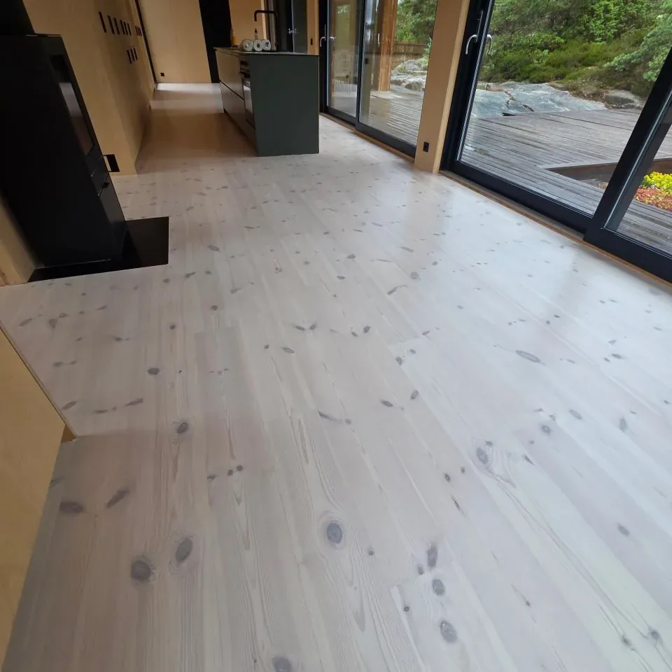
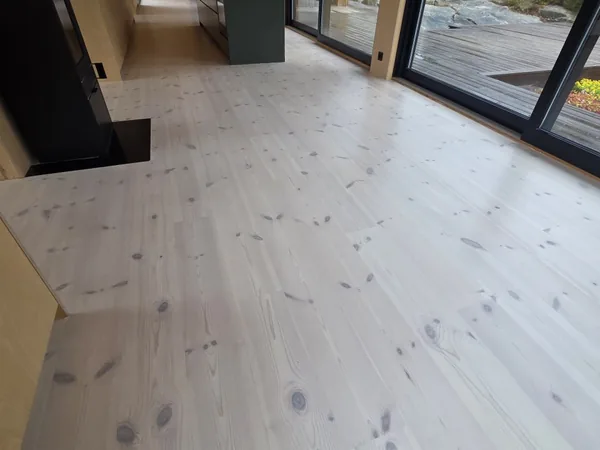
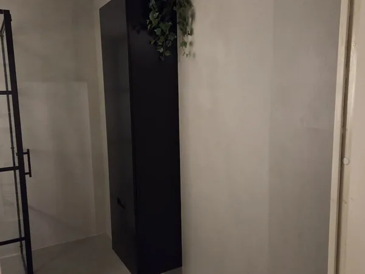
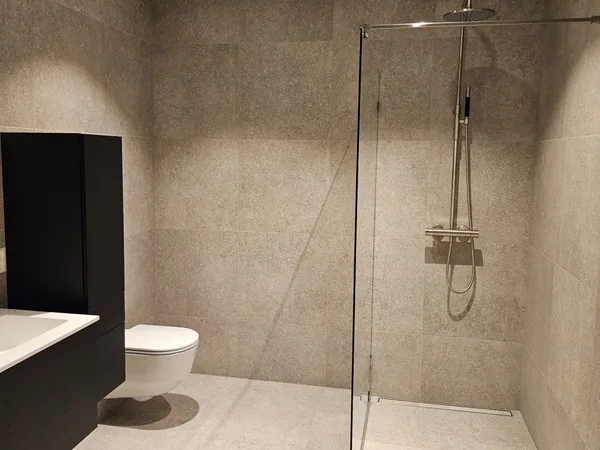
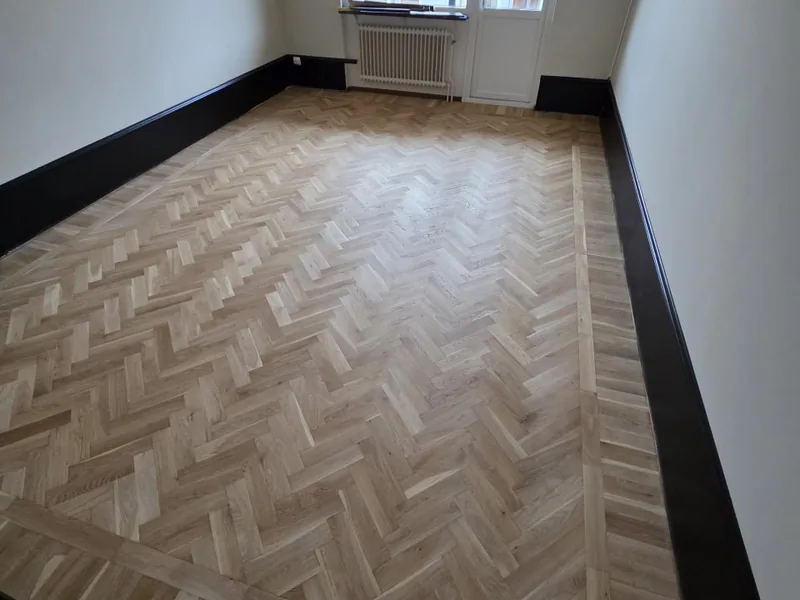
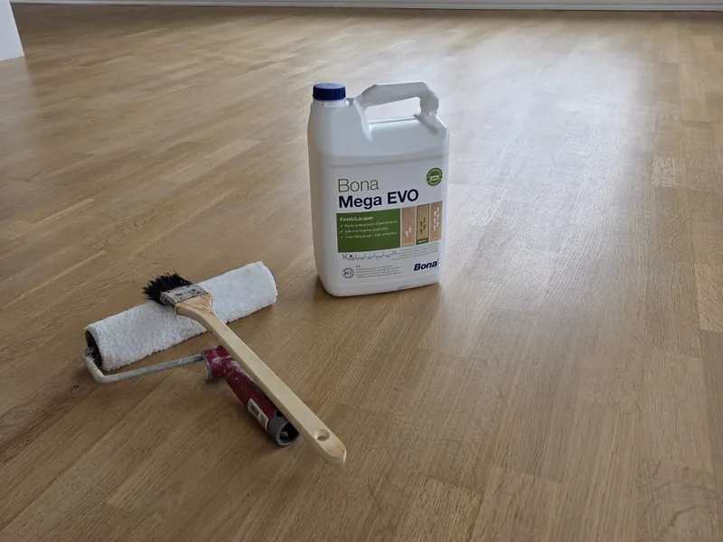
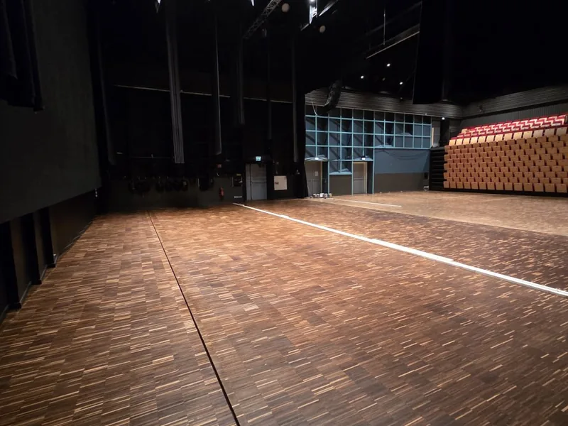
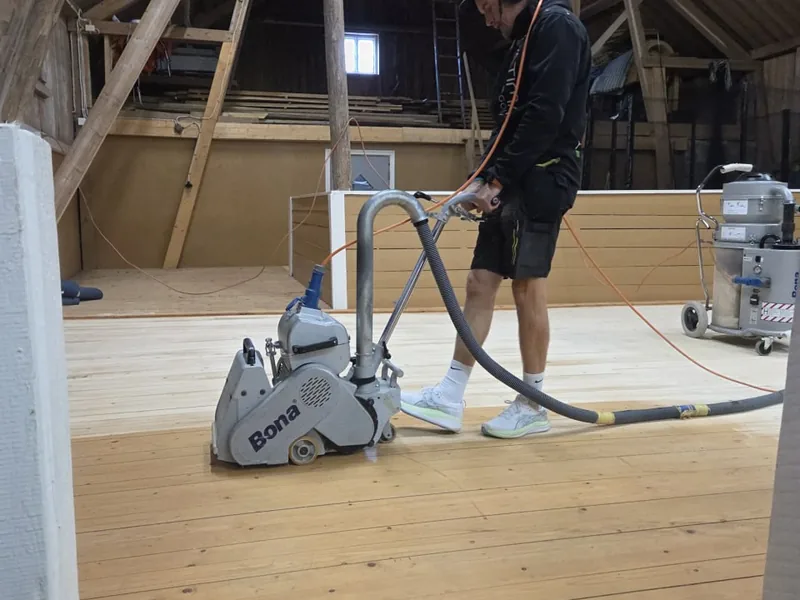
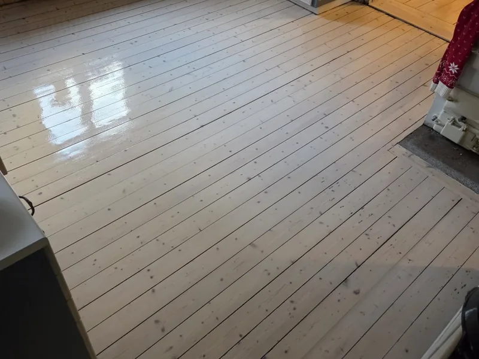
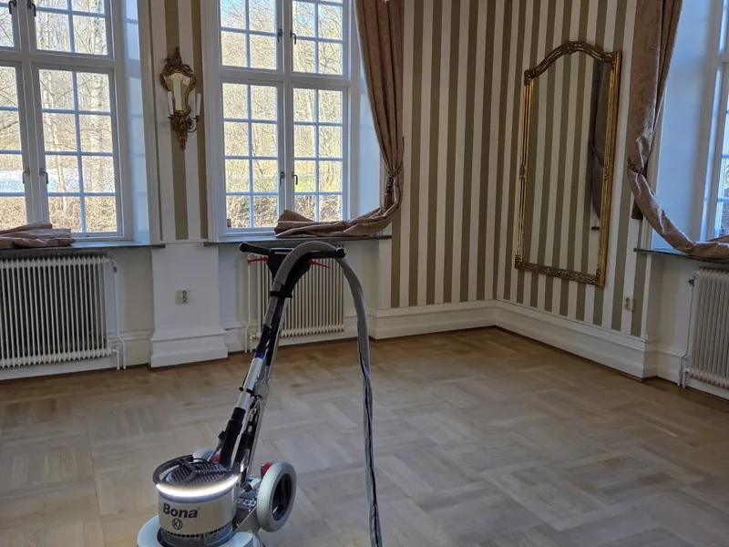

CK Måleri & Golv · Uddevalla & Trestad
Golvslipning, måleri och microcement
i Uddevalla, Trestad och Fyrbodal
Välkommen
Välkommen till oss på CK Måleri & Golv
Vi ger gamla parkettgolv nytt liv, förnyar tak och väggar med fräscha färger och hjälper dig med kakel, klinker samt microcement.
Med över 15 års erfarenhet erbjuder vi noggrant utfört arbete i Trestad och Fyrbodal.
Vad vi gör
Golv, väggar och våtrum — utan att lämna över
Ett golv som slipas och ett badrum som kaklas hänger ihop: nivåer, lister, tätskikt och ordning. Vi gör allt själva, så du slipper samordna tre firmor och två tidsplaner.

Golvslipning
Parkett, fiskben och gamla brädgolv slipas och behandlas om. Ofta är golvet du redan har bättre än det du tänkt köpa.
- Parkett och fiskben
- Gamla brädgolv
- Lack, olja eller pigment

Måleri & tapet
Väggar, tak, fönster, dörrar och fasader. Vi spacklar och grundar ordentligt — annars syns fusket i dåligt ljus.
- Invändigt och fasad
- Tapetsering
- Spackling och fog

Microcement
Fogfria ytor på golv, väggar och bänkskivor. Ett badrum i ett stycke, utan fogar som missfärgas.
- Badrum och kök
- Golv och väggar
- Utan fogar

Plattsättning
Kakel och klinker i hall, kök och badrum — med tätskikt som är gjort rätt, inte bara snyggt på ytan.
- Kakel och klinker
- Hall, kök och badrum
- Fogning och tätskikt
Våra jobb
Bilder från riktiga jobb
Inga stockfoton. Det här är ytor vi gjort i Uddevalla med omnejd.

Herringbone i ek — samma mönster, helt annan yta.

Bona Mega EVO och roller — lacken läggs i tunna lager.

Stor yta, tagen i etapper mellan bokningar.

Halva golvet kvar att slipa ner till rent trä.

Gammalt furugolv, behandlat — vitt mot en mörk vägg.

Gammal parkett, kristallkrona och en yta som tål att titta på.
Fler jobb läggs upp löpande på @ckmaleri på Instagram och CK Måleri & Golv på Facebook.
Så går det till
Du ska veta vad som händer, hela vägen
-
1
Hör av dig
Ring eller skicka formuläret. Berätta vad det gäller och var — några rader räcker.
-
2
Kostnadsfri offert
Vi tittar på ytan, går igenom material och kulör och lämnar ett fast pris. Det kostar ingenting.
-
3
Vi gör jobbet
Vi slipar, målar, gjuter eller sätter kakel tills det är klart — och städar efter oss.
Varför CK
Ett litet gäng med rätt maskiner
Vi är inte störst. Vi är de som tar jobbet, gör det själva och svarar när du ringer.
- Fast pris skriftligt
- Priset du får efter besiktning är priset. Inga tillägg när jobbet är igång.
- Över 15 års erfarenhet
- Vi har slipat, målat och satt kakel i över femton år. Det mesta har vi sett förut.
- Egna slipmaskiner
- Bona-maskiner och rätt slipsteg — därför blir ytan jämn och inte randig.
- Försäkrat
- F-skatt, företags- och ansvarsförsäkring. Du kan lämna över nycklarna.
- ROT-avdrag
- Där arbetet kvalificerar drar vi av det direkt på fakturan.
- Städat efter oss
- Slipdamm och färgstänk följer inte med hem. Vi dammsuger och torkar av.
- En kontakt
- Samma person från offert till färdigt jobb — ingen växel, inga mellanhänder.
- Trestad och Fyrbodal
- Vi utgår från Uddevalla och jobbar i hela Fyrbodal, inte bara i stan.
Omdömen
Vad kunderna säger
15 jobb via Servicefinder, snitt 5,0 av 5. Det här är vad de skrev.
★★★★★
”Jäkligt duktiga och väldigt bra service fick man. Otroligt trevliga och hjälpsamma.”
★★★★★
”Väldigt nöjd med slipning och behandling av mitt parkettgolv, det blev precis som jag hade hoppats på. Dessutom trevligt bemötande och bra kommunikation. Rekommenderar varmt Christoffer och CK Måleri!”
★★★★★
”Pålitlig och väl genomfört uppdrag. Var noga med att jag fick den nyansen jag hade tänkt. Hjälpsam med med kring arbetet runt uppdraget.”
Omdömena är hämtade från Servicefinder, där du kan läsa alla 15.
Områden
Trestad och Fyrbodal
Vi utgår från Uddevalla och jobbar i Trestad — Uddevalla, Trollhättan och Vänersborg — och vidare ut i övriga Fyrbodal. Är du osäker på om vi kommer till dig, ring och fråga.
- Uddevalla
- Trollhättan
- Vänersborg
- Ljungskile
- Munkedal
- Färgelanda
- Lilla Edet
- Stenungsund
- Tjörn
- Orust
- Lysekil
- Åmål
- Strömstad
- Lidköping
Vanliga frågor
Det folk frågar om först
Pengar och risk först. Det praktiska kommer efter.
Vad kostar en golvslipning?
Det avgörs av ytan, skicket och vilken behandling du vill ha. Du får ett riktmärke direkt på telefon och ett fast pris efter att vi tittat på golvet.
Kostar offerten något?
Nej. Besiktning och offert är kostnadsfritt och du binder inte upp dig på något.
Kan jag använda ROT-avdrag?
Ja, för arbete i din bostad. ROT ger 30 % av arbetskostnaden tillbaka, upp till ett tak per person och år. Vi drar av det direkt på fakturan och sköter ansökan.
Går mitt gamla golv att rädda?
Nästan alltid. Så länge trät inte är genomgånget eller fuktskadat går det att slipa fram en fräsch yta. Ser vi att det inte är värt pengarna säger vi det.
Lack eller olja?
Lack tål mer och är enklare att hålla rent. Olja ger en mattare och mer levande yta som går att bättra lokalt. Vi går igenom skillnaden så att du kan välja.
Vad är microcement?
En tunn massa som läggs på golv, väggar och bänkskivor och ger en fogfri yta med stenkänsla. Den kan ofta läggas ovanpå befintligt underlag.
Gör ni tätskikt i badrum?
Ja. Tätskiktet ska vara rätt utfört, annars hjälper varken kakel eller microcement. Det ingår när vi gör våtrum.
Var arbetar ni?
Uddevalla, Trollhättan, Vänersborg och bygderna runtomkring. Ring om du är osäker på om vi kommer till dig.
Kontakt
Berätta vad du har för yta
Skicka några rader om jobbet, eller ring. Du får svar samma dag och förslag på tid för besiktning.
- Telefon073-703 37 17
- E-postckmaleri@gmail.com
- Instagram@ckmaleri
- FacebookCK Måleri & Golv
- AdressFöreningsgatan 12, 451 52 Uddevalla
- OmrådeUddevalla · Trollhättan · Vänersborg